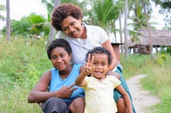
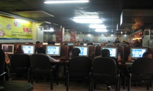
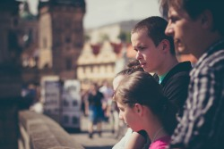

Get Started

Travel Tips
Click through to find tips and tricks to help you get the most out of your next big adventure
Travelling tips
Meet the Locals
People enrich your travels more than sights do. When you're in a new place without people you know, it isn't easy! Make it a point in your travels to stray away from most touristy places and visit local sights and shops. Apps and websites such as meetup and couchsurfing can also help to introduce you to local people. Local events also happening around the area can be a great way to interact with the people around you.
Back up the Important Stuff
Don't trust public computers. Internet cafes and other public computers often have all kinds of unknown software installed in them that could do damage to your personal files and data especially when transfering money online. Similarily, public wifi in foreign places can also be unsecure and unsafe. Try to use a VPN when connecting to a public wifi. Ensure to back up all your photos from the day and data onto another form of Media such as a USB stick or hard drive.
Take lots of Photos!
The experiences you make and people you meet while travellling are often once in a lifetime opportunities. Leave lasting memories and take lots of photos on your travels for you to look back on in years to come!
Keep an Open Mind
While travelling, you're prone to come across new cultures, races and lifestyles different from your own. Don't judge if these are different to yours but rather, embrace the different opinions, people, possibilities and lifestyles. You may find yourself learning a thing or two!
Accomodation
Learn about finding the best deals for quality accomodation for your next travel
Accomodation
Hotels
Hotels are the most common, convenient and comfortable form of accomodation you will find while travelling and while often on the pricier side, they can provide well for a vacation or a business trip. However, choosing a hotel may not be those wanting a full cultural experience.
Hostels
Often a common choice of accomodation for young backpackers and budget consious travellers, hostels are often made up of shared dormitories, restrooms, lockers and common areas such as TV rooms and Kitchens. They are very affordable and a great way to meet new people. However, Hostels have often been centres of theft so looking after your possessions is critical. Great Sites include Hostel bookers and Hostel World
Air bnb
Air bnb is a site founded in 2008, which helps people to find and rent places to stay in their own town/the town they are travelling to. It often provides a different experience from Hotels and other forms of accomodation.
Monastery
Religous Monasterys are very family friendly choices of accomodation, as well as quiet forms of stay. Most are very cheap and will often only ask for a donation.
Transport
Train, plane or ferry? Here we will help you decide on the best option of travel for your next destination
Transport
Air
Travelling by plane is arguably the most common and popular form of transport out there. It's fast and reliable, and covers relatively long distances with comfort in mind. While there are cheap Airfares out there, it is on the pricier side of transport.
Ferry
Being the cheapest form of transport across the sea, the Ferry provides you with gorgeous scenery along the way as well as remote islands. However, long distance trips can often take several days as the trip itself is quite slow.
Train & Subway
Taking the train across cities and countries is a great and affordable way to travel, as well as being eco friendly on the environment. It can also be incredibly scenic, as you travel through multiple sceneries and environments.
Bus
Tour Buses and Public Buses are great ways to travel on the road between short distances of travel.
Car
Renting out a car or using your own car can be handy as it allows you to stop when you want to observe places of interest. Great for short distances of travel.